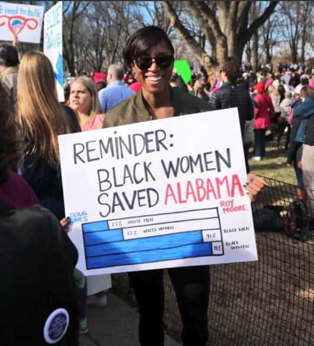
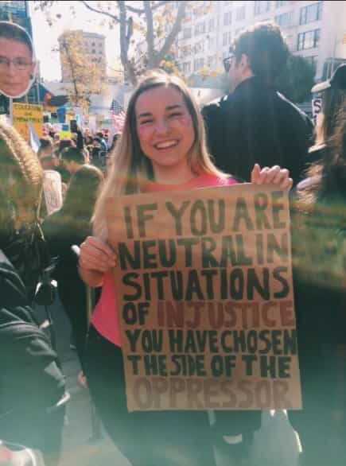
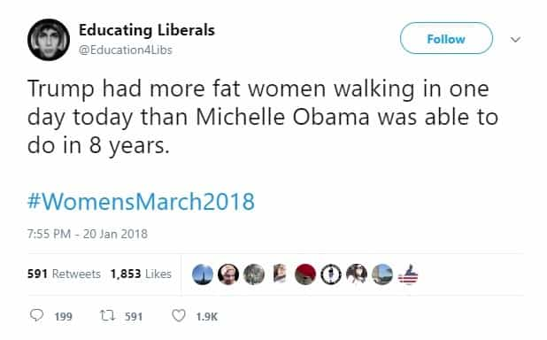

John Carver is a four year ROK veteran with over fifty articles of SJW-triggering truth bombs on archive. You can follow him on Twitter if you are so inclined.


Despite the loss of zero rights, privileges, and civil liberties for women and non-white male “minorities” (which together make up 70% of the U.S. population) since Donald Trump took office one year ago, SJW’s quite literally (Hitler) doubled down on their post-election outrage and made a sequel to 2017’s Women’s March.
From Italy, to the frozen tundra, to the American SJW strongholds of San Francisco, New York, LA, and Austin, women living in arguably the most privileged conditions which have ever been experienced in human history “resisted” again with the same tired platitudes about empowerment, diversity, and “Nazis” among other cringy falsehoods.
Male feminists, soy boys, and white knights came along for the ride too, while their more masculine counterparts were either lifting weights, running game, trading in cryptocurrencies, or just having fun doing something else which was actually worthwhile.
The following 22 photos and tweets perfectly capture the mood of that wacky saturday in January 2018.
Seven dog years is one human year right? How clever! Also maybe if your vagina hat wearing SJW owner cut back on her expensive daily Starcucks/Fivebucks coffee habit, she could afford better dog food for you.
I see a lot of white faces in that crowd. If you think that Haiti is so wonderful and “Trumps America” is the real shithole, why don’t you take a holiday to Port-au-Prince or send your daughter off on a university semester there?
Despite having a relatively young female mayor running the former capital of the once unstoppable Roman Empire, these Italian women gotta demand/resist more!
Men’s sperm aided and abetted in bringing you into this world. Also the hospital which helped safely deliver and care for you was built by men. And the house you sleep in, the shower you bathe in, the car you drive, the logistics network to get food in your refrigerator, and the smartphone you can’t put down.
Are you just mad because men stopped caring about your “depth” and “warmth” many decades ago?
Actually there have been many periods of U.S. history where there was very little immigration. In fact, as recently as the 1970’s the United States had among there lowest proportions of foreign born residents in the nations history. Cycles of high and low immigration is entirely normal.
How many weights could have been lifted or how many businesses could have been started on this beautiful day? Did you ever consider a rally to address actual issues like rampant homelessness in Los Angeles?
Agreed! Let’s start with trading David Duke…… and Tim Wise, Ta-Nehisi Coates, DeRay McKesson, and Shaun King for five white South Africans desperate to escape race-targeted crime and racial discrimination in their home country. “Racists for Refugees” right? 🙂
“Less Catcalls More Cats”. Don’t you worry lady. With your looks and your attitude, father time will guarantee that your wish will come true.
Oh right…. none of these women know how to cook.
Low testosterone soy boy Millennials with receding hairlines trying to white knight with women who will never sleep with them.
Nuh uh! Argentina, Chile, and Brazil are in “America” and they’ve all had female presidents. As for the United States being “run into the ground time and time again”, that’s a preposterous statement. Instead, take a look at what Dilma Rousseff did to Brazil and what Angela Merkel is doing to Germany if you think women are superior.
Why do feminists and social justice warriors use so much profanity?

Reminder: How many black women from Alabama died in World War II?

Keep your hair away from degenerate and employment-limiting dye products. Employers have the “rights” to not hire you if they don’t like the way you look compared to more professional looking candidates. Also if women want to continue discriminating against men who are tiny or short, we are going to discriminate against women who are old or fat. Fair is fair.

Then go protest against Switzerland. It’s probably one of the best places in the world to be a woman, and yet they’re neutral on everything that surrounds them. Good or bad.
There haven’t been any Nazi’s since 1945. Also right wingers in general don’t want to get assaulted or doxxed by crazy feminists and Antifa thugs for merely voicing an opinion.
There will never be equality until women start signing up in droves to work jobs in these extreme weather conditions like many in the oil and gas or fishing industries. That will never happen.
If a woman can’t cook for shit, a man owes her no wedding band.
Maybe it’s just all undesirable women.
He’s right!

Right again. Ending the article on a positive note, maybe it’s the one good thing that came out of the whole ordeal.
Don’t Miss: Top 15 #BackToTheKitchen Tweets